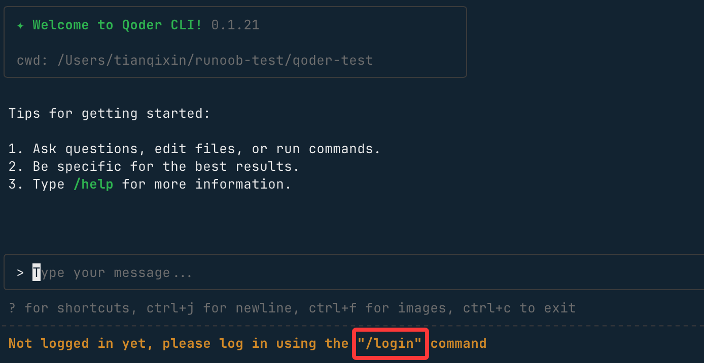
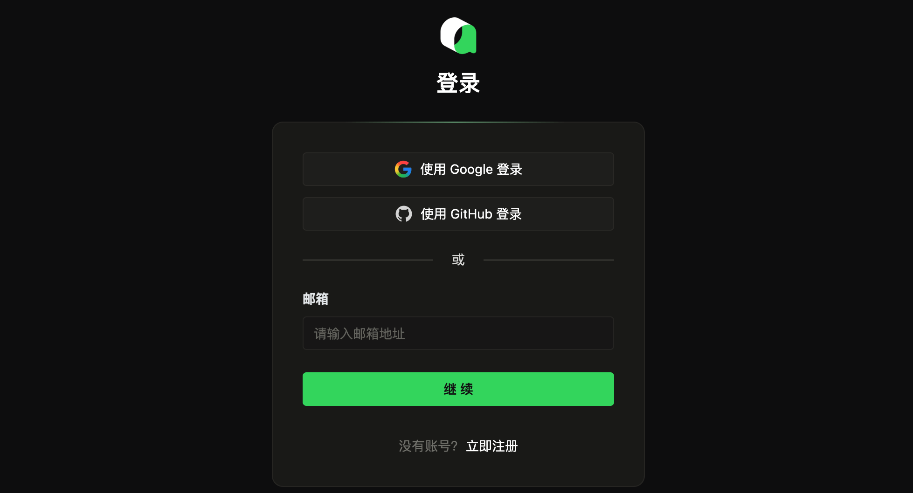

Qoder CLI
Qoder CLIは、Calude Codeに似たコマンドラインツールで、ターミナルでさまざまな操作を実行でき、開発や自動化スクリプトなど多くのシナリオに適しています。
Qoder CLIはQoder（https://qoder.com/）プラットフォームが提供する公式コマンドラインクライアントで、以下のOSとアーキテクチャをサポートしています：
- 対応OS：macOS、Linux、Windows（推奨：Windows Terminal）
- CPUアーキテクチャ：arm64、amd64（Windows arm64は現時点では非対応）

右上隅のダウンロードボタンをクリックして、CLIを選択し、インストールコマンドを確認します：

インストール方法
以下の方法でインストールできます。
1、cURL
# 安装 curl -fsSL https://qoder.com/install | bash # 升级 curl -fsSL https://qoder.com/install | bash -s -- --force
2、Homebrew（macOS、Linux）
brew install qoderai/qoder/qodercli --cask
3、NPM
npm install -g @qoder-ai/qodercli
インストール後、次のコマンドを実行します。
qodercli --version
CLIのバージョン番号が次のように表示されれば0.1.21、インストール成功です。
次に、作成したプロジェクトディレクトリに移動して、Qoder CLIを使い始められます：
cd your-project qodercli
アカウントにログイン
qodercli コマンドで対話型セッションを開始するには、ログインが必要です：
qodercli
初回使用時にログインを求められます：

/login
プロンプトに従ってアカウントでログインします。ここではLogin with browser（ブラウザでログイン）を選択します：

アカウントがない場合は、https://qoder.com/ウェブページでアカウントを登録して無料のProを取得するか、GoogleまたはGitHubアカウントで直接登録できます。

ログインが成功すると、ユーザー情報が表示されます：

Qoderからログアウトするには、/logoutコマンドでログアウトします。
# 在交互式提示符中 /logout
Qoder CLIを終了するには、次のコマンドを使用します：
/quit
また、/model コマンドを使用してモデルを表示・切り替えることができます：

次に、入力ボックスに要件を入力し始めます。たとえばVueプロジェクトの作成を依頼すると、Qoderが要件を整理してコードを作成します：
作成中に権限のリクエストが表示されたら、Allowを選択してEnterを押します：
しばらくするとプロジェクト全体が完成します。
Qoder CLI コアモードと高度な使い方
TUIモード（対話型テキストインターフェース）
TUI（Text User Interface）はQoder CLIのデフォルトの対話モードで、テキスト会話やコマンド実行などのコア操作をサポートし、日常的に使用する主要な方法です。
1. 起動方法
任意のプロジェクトのルートディレクトリで次のコマンドを実行すると、TUIモードに入れます：
qodercli
2. 入力モード
TUIはさまざまな入力モードを提供し、操作シナリオに応じて対応する記号を入力すると切り替えられます：
| コマンド記号 | モード名 | 説明 |
|---|---|---|
> |
会話モード | デフォルトモード。任意のテキストを入力するとCLIと自然に会話できます |
! |
Bashモード | 会話モードで!を入力すると、shellコマンドを直接実行できます |
/ |
スラッシュモード | 会話モードで/を入力すると、内蔵機能コマンドを呼び出せます |
# |
メモリモード | 会話モードで#を入力すると、内容がプロジェクトのAGENTS.mdメモリファイルに追記されます |
\ + Enter |
複数行入力 | を入力して\Enterを押すと、複数行のテキストを入力できます |
3. 内蔵ツール
TUIモードには一般的なツールが内蔵されており、追加設定なしでファイル操作やコマンド実行ができます：
- Grep：ファイル内容の検索
- Read：ファイル内容の読み取り
- Write：ファイル内容の変更・書き込み
- Bash：shellコマンドの実行
4. コアスラッシュコマンド
を入力して/次の内蔵コマンドを呼び出すと、CLIのコア機能にすばやくアクセスできます：
| コマンド | 説明 |
|---|---|
/login |
Qoderアカウントにログイン |
/help |
TUIの完全な使用ヘルプを表示 |
/init |
プロジェクトのAGENTS.mdメモリファイルを初期化・更新 |
/memory |
編集AGENTS.mdメモリファイル |
/quest |
Specに基づいてタスク委任を完了 |
/review |
ローカルのコード変更をレビュー |
/resume |
履歴セッションの表示・復元 |
/clear |
現在のセッションの履歴コンテキストをクリア |
/compact |
現在のセッションの履歴コンテキストを要約（簡潔な内容） |
/usage |
アカウントの状態、Credits消費などの情報を表示 |
/status |
CLIの状態を表示（バージョン、モデル、アカウント、API接続、ツール状態） |
/config |
CLIのシステム設定を表示 |
/agents |
サブエージェント管理（表示・作成・編集） |
/bashes |
バックグラウンドで実行中のBashタスクを表示 |
/release-notes |
CLIの更新ログを表示 |
/vim |
外部エディタを開いて入力内容を編集 |
/feedback |
CLIの使用問題をフィードバック |
/quit |
TUIモードを終了 |
/logout |
現在のログインアカウントからログアウト |
高度な起動オプション
Qoder CLIを起動する際、以下のパラメータで起動動作をカスタマイズでき、さまざまな使用シナリオに対応できます：
| オプション | 説明 | 例 |
|---|---|---|
-w |
ワークスペースディレクトリを指定 | qodercli -w /Users/demo/projects/nacos |
-c |
前回のセッションを続行 | qodercli -c |
-r |
指定した履歴セッションを復元 | qodercli -r *******-c09a-40a9-82a7-a565413fa39 |
--allowed-tools |
指定した内蔵ツールのみ使用を許可 | qodercli --allowed-tools=READ,WRITE |
--disallowed-tools |
指定した内蔵ツールの使用を禁止 | qodercli --disallowed-tools=READ,WRITE |
--max-turns |
最大対話ラウンド数を設定 | qodercli --max-turns=10 |
--yolo |
権限チェックをスキップ（注意して使用） | qodercli --yolo |
Printモード（非対話型）
Printモードは非対話の一括実行モードで、出力形式をカスタマイズでき、自動化スクリプトやCI/CDシナリオに適しています。
1. 起動方法
次のコマンドを実行してPrintモードに入ります：
qodercli --print
2. コアパラメータ
Printモードは以下のパラメータをサポートし、高度な起動オプションと一部のパラメータを共用します：
| パラメータ | 説明 | 例 |
|---|---|---|
-p |
非対話方式でエージェントを実行 | qodercli -q -p "帮我分析当前项目的依赖结构" |
--output-format |
出力形式を指定（text/json/stream-json） | qodercli --output-format=json |
-w |
ワークスペースディレクトリを指定 | 高度な起動オプションと同じ |
-c |
前回のセッションを続行 | 高度な起動オプションと同じ |
-r |
指定したセッションを復元 | 高度な起動オプションと同じ |
--allowed-tools |
指定したツールのみ許可 | 高度な起動オプションと同じ |
--disallowed-tools |
指定したツールを禁止 | 高度な起動オプションと同じ |
--max-turns |
最大対話ラウンド数 | 高度な起動オプションと同じ |
--yolo |
権限チェックをスキップ | 高度な起動オプションと同じ |
MCPサービス統合
Qoder CLIは標準のMCP（Model Context Protocol）ツールの統合をサポートし、CLIの能力範囲を拡張します（例：ブラウザ制御、サードパーティツール呼び出し）。
1. MCPサービスの追加
Playwright（ブラウザ制御）の統合を例にすると、次のコマンドを実行します：
qodercli mcp add playwright -- npx -y @playwright/mcp@latest
2. MCPサービスの管理
| コマンド | 説明 |
|---|---|
qodercli mcp list |
追加済みのすべてのMCPサービスを一覧表示 |
qodercli mcp remove playwright |
指定したMCPサービスを削除（例：playwright） |
3. 詳細設定（オプション）
-t：MCPサービスタイプを設定します。サポート対象：stdio/sse/streamable-http（StdioタイプはTUI起動時に自動的に起動されます）；-s：サービスの範囲を設定します。「ユーザーレベル」または「プロジェクトレベル」をサポートし、プロジェクトごとにMCP設定をカスタマイズできます。
4. MCPサービスファイルの保存場所
追加された MCP サービスの設定は、以下のファイルに保存されます：
# 为当前用户或特定项目添加，不会被提交。
~/.qoder.json
# 为当前项目添加，通常会被提交。
${project}/.mcp.json
クリックしてノートを共有
ノートはこの記事の内容を拡張したものである必要があります。
記事の投稿は、こちらをクリックしてください
登録招待コードの取得方法
ノートを共有するには、必ずログインが必要です。
登録招待コードの取得方法